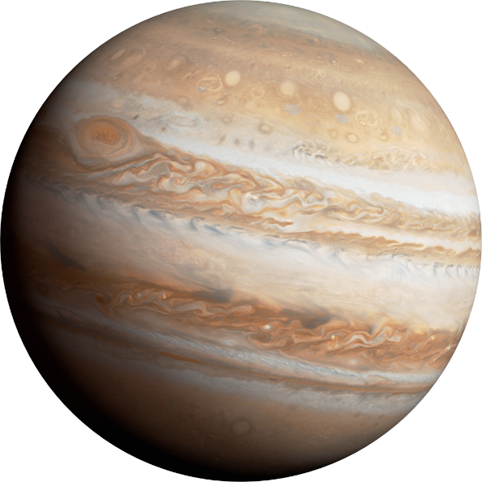

SUN
The Sun (or Sol), is the star at the centre of our solar system and is responsible for the Earth’s climate and weather. The Sun is an almost perfect sphere with a difference of just 10km in diameter between the poles and the equator. The average radius of the Sun is 695,508 km (109.2 x that of the Earth) of which 20–25% is the core.
Moon
The Moon is Earth's only natural satellite. It orbits at an average distance of 384,400 km, about 30 times the diameter of Earth. Tidal forces between Earth and the Moon have synchronized the Moon's orbital period with its rotation period at 29.5 Earth days, causing the same side of the Moon to always face Earth.
Mercury
Mercury is the closest planet to the Sun and due to its proximity it is not easily seen except during twilight. For every two orbits of the Sun, Mercury completes three rotations about its axis and up until 1965 it was thought that the same side of Mercury constantly faced the Sun. Thirteen times a century Mercury can be observed from the Earth passing across the face of the Sun in an event called a transit, the next will occur on the 9th May 2016.
Venus
Venus is the second planet from the Sun and is the second brightest object in the night sky after the Moon. Named after the Roman goddess of love and beauty, Venus is the second largest terrestrial planet and is sometimes referred to as the Earth’s sister planet due the their similar size and mass. The surface of the planet is obscured by an opaque layer of clouds made up of sulphuric acid.
Earth
Earth is the third planet from the Sun and is the largest of the terrestrial planets. The Earth is the only planet in our solar system not to be named after a Greek or Roman deity. The Earth was formed approximately 4.54 billion years ago and is the only known planet to support life.
Mars
Mars is the fourth planet from the Sun and is the second smallest planet in the solar system. Named after the Roman god of war, Mars is also often described as the “Red Planet” due to its reddish appearance. Mars is a terrestrial planet with a thin atmosphere composed primarily of carbon dioxide.
Jupiter
The planet Jupiter is the fifth planet out from the Sun, and is two and a half times more massive than all the other planets in the solar system combined. It is made primarily of gases and is therefore known as a “gas giant”.
Saturn
Saturn is the sixth planet from the Sun and the most distant that can be seen with the naked eye. Saturn is the second largest planet and is best known for its fabulous ring system that was first observed in 1610 by the astronomer Galileo Galilei. Like Jupiter, Saturn is a gas giant and is composed of similar gasses including hydrogen, helium and methane.
Uranus
Uranus is the seventh planet from the Sun. While being visible to the naked eye, it was not recognised as a planet due to its dimness and slow orbit. Uranus became the first planet discovered with the use of a telescope. Uranus is tipped over on its side with an axial tilt of 98 degrees. It is often described as “rolling around the Sun on its side.
Neptune
Neptune is the eighth planet from the Sun making it the most distant in the solar system. This gas giant planet may have formed much closer to the Sun in early solar system history before migrating to its present position.


